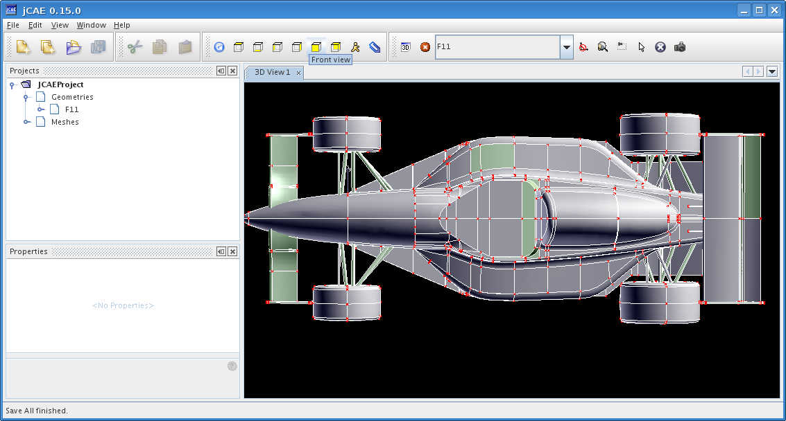
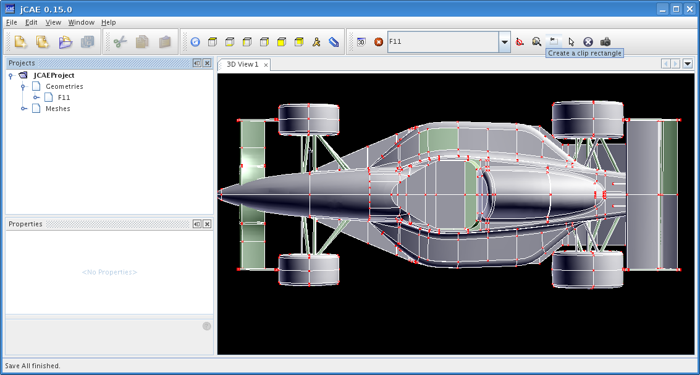
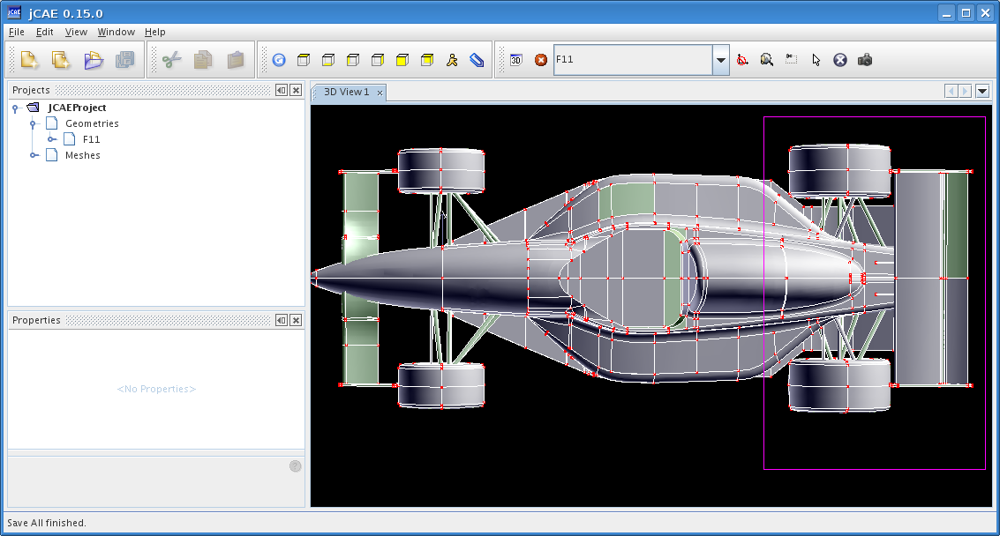
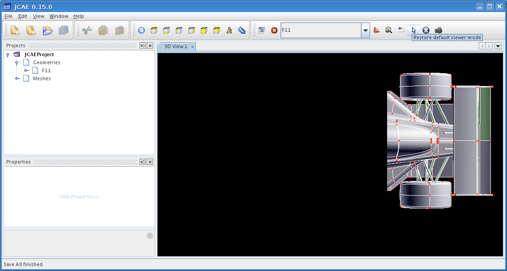
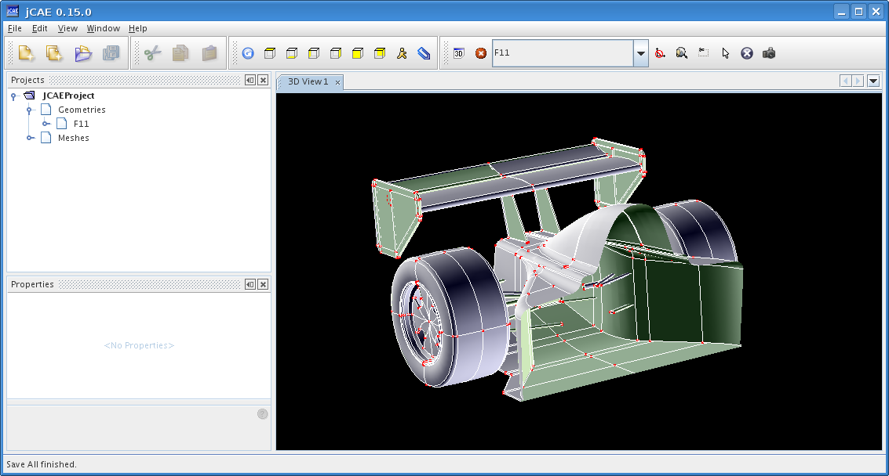
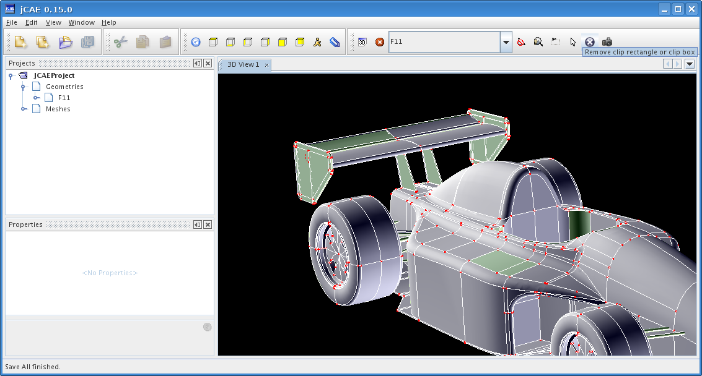
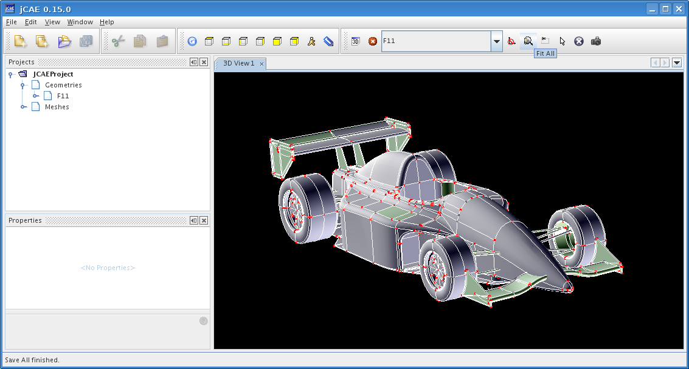

Imagine that you want to view display the interior of a volume. One could explode geometry shape into faces, and display only desired faces. But this is very unpractical with large CAD shapes. An alternative is to use clipping, as described below. First action is to put shape in a position to ease clipping, this is often achieved by selecting one of the predefined views:

Click on Create a clip rectangle icon

and select a region:

Everything outside selected region is hidden. You need to click on Restore default viewer mode icon to be able to move camera again.

This view allows to see inside closed volumes.

To see the whole shape again, click on Remove clip rectangle or clip box icon.

Fit All icon adjusts camera position to ensure that whole shape is visible.
